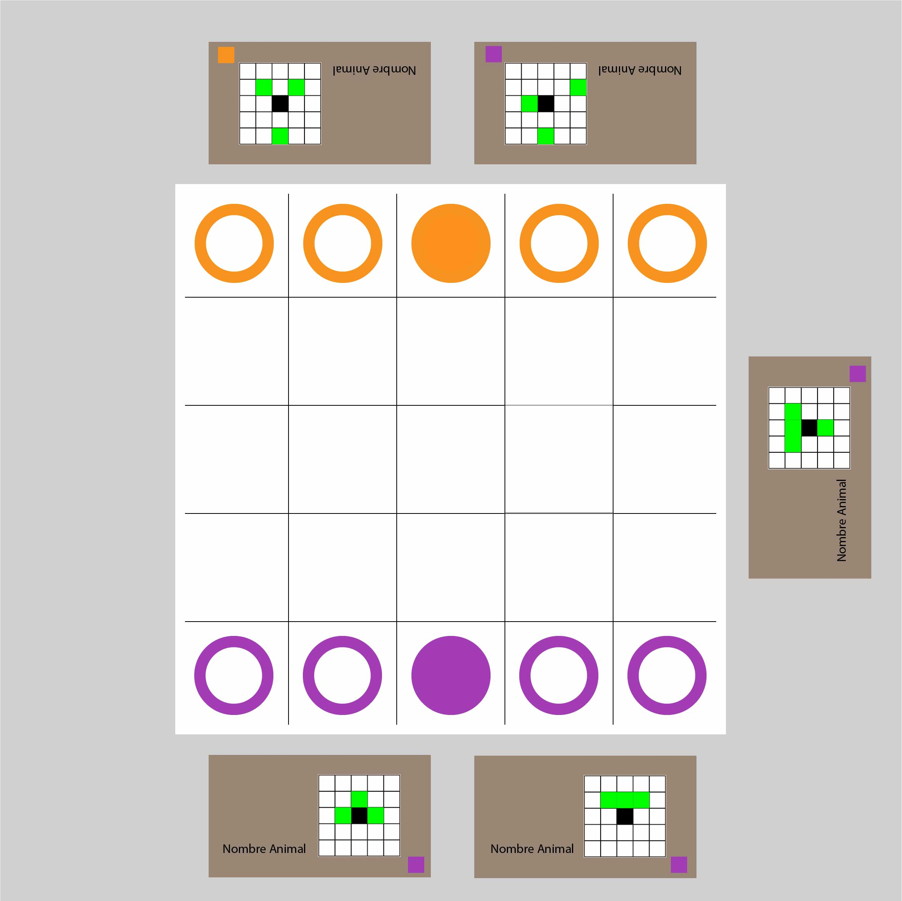
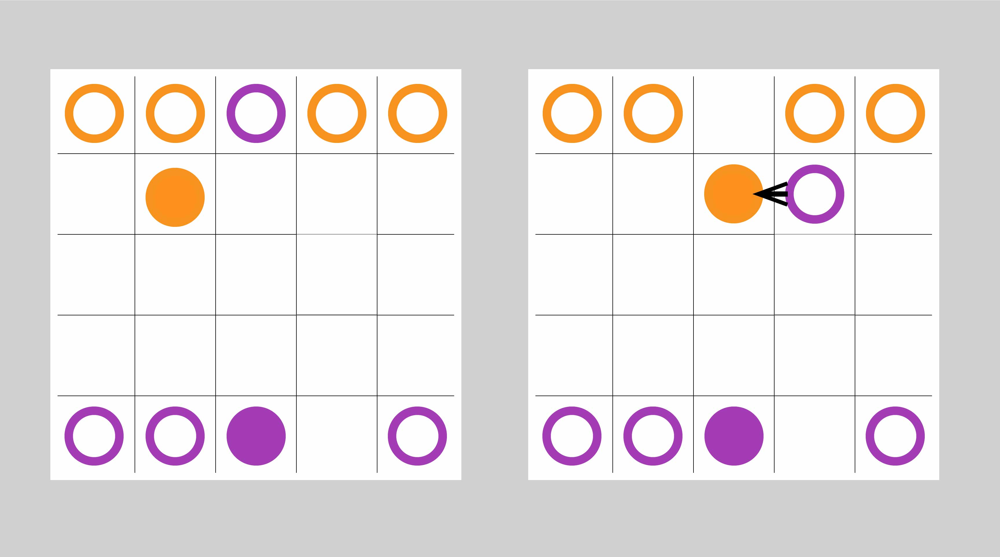

Mazo de cartas de Onitama o usar la aplicación al final de esta página
4 fichas de un color, 4 fichas de otro. 1 ficha del primer
color diferenciable del resto, 1 ficha igual del otro color
Posición inicial

Las fichas van como se ve en la imagen, el maestro al centro, y los alumnos a los lados
Cada jugador tiene sus dos cartas podiendo ser leidas por ellos
La carta central va vertical
Objetivo

Lograr eliminar al maestro del contrario
Lograr llegar a la base del contrario con el maestro (es la casilla donde inicia el maestro)
Solo es necesario lograr uno de los dos objetivos
(Hay un error en la imagen y se ve a un dicipulo llegar a la base como objetivo. Se gana cuando llega el maestro)
Desarrollo del juego
Se reparten 2 cartas para cada jugador y se deja una carta en el medio
Comienza el jugador del color de la carta del medio
Las cartas muestran como se puede jugar cada ficha, sea maestro o aprendiz. Uno debe elegir una de sus cartas, y usar ese patrón de movimiento con una de sus fichas.
Después de jugar se toma la carta elegida y se intercambia con la carta central
Esto se repite hasta lograr cualquiera de los dos objetivos.
Movimientos
Las cartas dicen las posibilidades de movimiento
Si uno se "come" una pieza del rival, esta sale del tablero.
Se puede comer o mover a un lugar libre
No se puede mover fuera del tablero o sobre una ficha propia